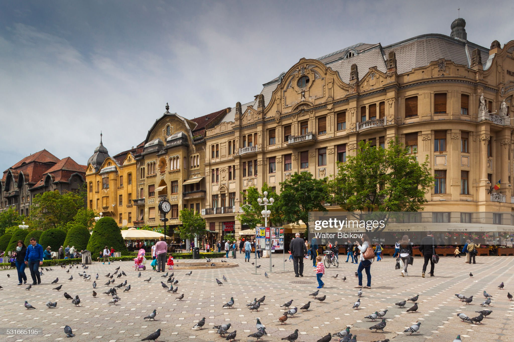
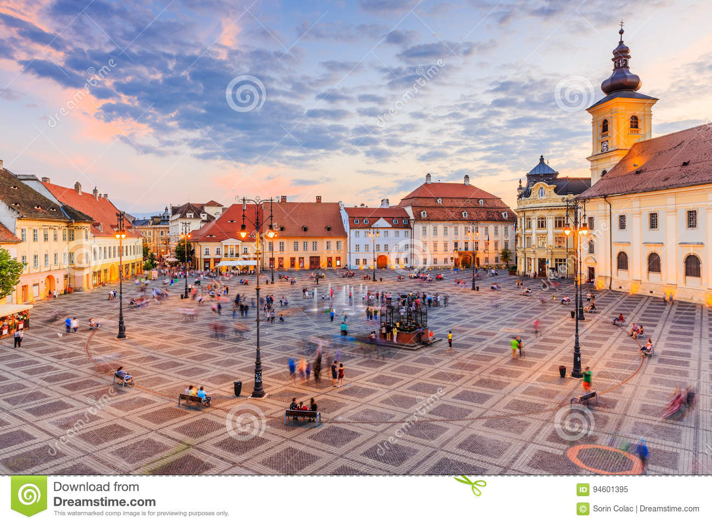

București este capitala României, cel mai populat oraș și cel mai
important centru industrial și comercial al țării. Populația stabilă
de 1.883.425 de locuitori (2011[6]) face ca Bucureștiul să fie printre
marile orașe din Uniunea Europeană. Conform unor estimări ce iau în
considerare persoanele fără domiciliu în oraș, sau în tranzit,
Bucureștiul adună zilnic peste trei milioane de oameni.[7] La acestea
se adaugă faptul că localitățile din preajma orașului, care fac parte
din Zona Metropolitană, însumează o populație de aproximativ 430.000
de locuitor.

Imaginea Timisoarei
Timișoara (în latină Timisvaria; în maghiară Temesvár; în germană
Temeschwar, alternativ Temeschburg sau Temeswar; în sârbă Темишвар, cu
alfabet latin: Temišvar; în turcă Temeșvar) este municipiul de
reședință al județului Timiș, Banat, România. Se află în vestul
României, aproape de frontierele cu Ungaria și Serbia, pe malul râului
Bega. Numele localității provine de la cel al râului Timiș, combinat
cu substantivul maghiar vár, „cetate”, adică Cetatea Timișului. Situat
pe râul Bega, Timișoara este cel mai mare și important oraș al
regiunii istorice Banat. Din 1848 și până în 1860 a fost capitala
Voivodinei sârbești și a Banatului timișan. După Primul Război Mondial
Timișoara a intrat în componența României. În anul 1989, orașul a fost
focarul Revoluției Române, care a îndepărtat de la guvernare regimul
comunist.

Imaginea Sibiului
Sibiu (în germană Hermannstadt, în săsește: Härmeschtat, în maghiară
Nagyszeben, în latină Cibinium) este municipiul de reședință al
județului cu același nume, Transilvania, România, format din
localitățile componente Păltiniș și Sibiu (reședința). Sibiul este un
important centru cultural și economic din sudul Transilvaniei, cu o
populație de 147.245 locuitori conform recensământului din 2011.
Stațiunea de iarnă Păltiniș se află la 32 km distanță de centrul
municipiului, iar lacul glaciar Bâlea se află la aproximativ 75 km
distanță de oraș. Municipiul Sibiu a reprezentat și reprezintă unul
dintre cele mai importante și înfloritoare orașe din Transilvania,
fiind unul dintre principalele centre ale coloniștilor sași stabiliți
în zonă. Orașul a fost capitală a Principatului Transilvania între
anii 1692-1791 și 1849-1865. A cunoscut în ultimii ani o renaștere
economică și culturală semnificativă. Sibiul este în prezent unul din
orașele cu cel mai mare nivel de investiții străine din România. În
anul 2007 a fost Capitala Culturală Europeană, împreună cu orașul
Luxemburg.
România este un stat situat în sud-estul Europei Centrale, pe cursul
inferior al Dunării, la nord de peninsula Balcanică și la țărmul
nord-vestic al Mării Negre.[8] Pe teritoriul ei este situată aproape
toată suprafața Deltei Dunării și partea sudică și centrală a Munților
Carpați. Se învecinează cu Bulgaria la sud, Serbia la sud-vest,
Ungaria la nord-vest, Ucraina la nord și est și Republica Moldova la
est, iar țărmul Mării Negre se găsește la sud-est. De-a lungul
istoriei, diferite porțiuni ale teritoriului de astăzi al României au
fost în componența sau sub administrația Daciei, Imperiului Roman,
Imperiului Otoman, Imperiului Rus, Imperiului Austriac și a celui
Austro-Ungar. România a apărut ca stat, condus de Alexandru Ioan Cuza,
în 1859, prin unirea dintre Moldova și Țara Românească, păstrând
autonomia și statutul de stat tributar față de Imperiul Otoman, pe
care-l aveau cele două principate. A fost recunoscută ca țară
independentă 19 ani mai târziu. În 1918, în urma Primului Război
Mondial, Transilvania, Bucovina și Basarabia s-au unit cu România
formând România Mare sau România interbelică, care a avut cea mai mare
extindere teritorială din istoria României (295.641 km2). În timpul
celui de-al Doilea Război Mondial (în 1940), România Mare, sub
presiunea Germaniei Naziste, a cedat teritorii Ungariei (nord-estul
Transilvaniei), Bulgariei (Cadrilaterul) și Uniunii Sovietice
(Basarabia, Herța și Bucovina de Nord). După abolirea dictaturii lui
Antonescu la 23 august 1944, România s-a retras din alianța cu
Puterile Axei, trecând de partea Puterilor Aliate (Regatul Unit,
Statele Unite, Franța și Uniunea Sovietică). Prin Tratatul de pace de
la Paris semnat la 10 februarie 1947, din teritoriile cedate ale
fostei Românii Mari, a fost recuperat Transilvania de Nord. După
înlăturarea regimului comunist instalat în România (1989) și după
destrămarea Uniunii Sovietice (1991), statul a inițiat o serie de
reforme economice și politice. După un deceniu de probleme economice,
România a introdus noi reforme economice de ordin general (precum cota
unică de impozitare, în 2005) și a aderat la alianța politico-militară
NATO la 29 martie 2004 și la Uniunea Europeană la 1 ianuarie 2007.
România este o republică semi-prezidențială. Este al nouălea stat după
suprafața teritoriului (238.397 km²) și al șaptelea după numărul
populației (peste 20 milioane locuitori)[9] dintre statele membre ale
Uniunii Europene. Capitala țării, București, este și cel mai mare oraș
al acesteia și al șaselea oraș din UE după populație (1,9 milioane
locuitori). A fost rândul României să desemneze un oraș drept Capitală
Europeană a Culturii, pentru 2007, fiind ales Sibiul,[10] și pentru
2023, fiind aleasă Timișoara.[11] România este membră a unor
organizații internaționale, printre care: ONU din 1955, CoE din 1993,
Uniunea Europeană de la 1 ianuarie 2007, NATO din 29 martie 2004,
OSCE, OIF din 2003, Uniunea Latină din 1980, și unor instituții
economice: Grupul Băncii Mondiale, FMI din 1972, BERD din 1991; și
este candidată la aderarea la OCDE.[12][13]